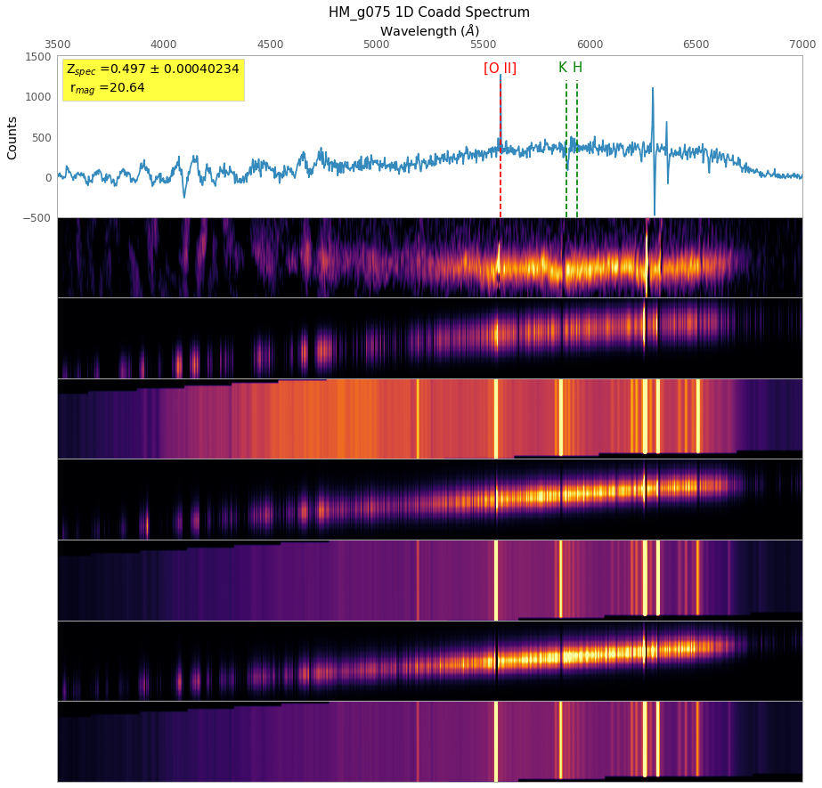

Here we present several pieces of data related to HM_g075
First we show the 1D and 2D spectra collected using KECK LRIS. From top to bottom we show the 1D coadded spectra from all of the exposures. Next, we show the 2D coadded spectra from all of the exposures. In the last six panesl we show each exposure taken of the object first showing the 2D spectra followed by the sky background.
